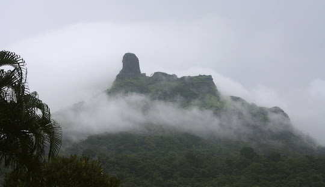
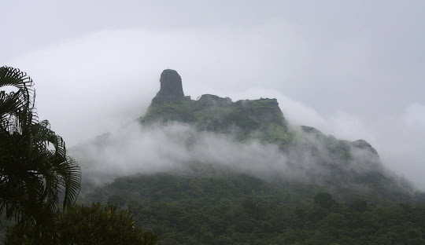

Raigad is one of the districts in Konkan Division of Maharashtra and Arabian Sea coast forms western boundary of the district. Most hilly places of the District are in the Sahyadri mountain range. Previously known as Kolaba, it was rechristened as Raigad District.
Raigad, situated in the Raigad district of Maharashtra, India, is a hill fort located in the town of Mahad. It is one of the strongest fortresses on the Deccan Plateau and was historically referred to as Rairee or Rairy fort.[1]
Shivaji, the Maratha ruler, along with the his chief engineer Hiroji Indulkar, oversaw the construction and development of various buildings and structures within Raigad. In 1674, after being crowned the king of the Maratha Kingdom of the Konkan, Shivaji chose Raigad as his capital.[2]
Located at an elevation of 820 metres (2,700 ft) (2,700 ft) above its base and 1,356 m (4,449 ft) (4,449 ft) above sea level within the Sahyadri mountain range, the fort offers views of the surrounding area. Accessing the fort requires ascending approximately 1,737 steps. Alternatively, visitors can opt for the Raigad Ropeway, an aerial tramway spanning 750 m (2,460 ft) (2,460 ft) in length and reaching a height of 400 m (1,300 ft) (1,300 ft), which conveniently transports them from the ground to the fort in just four minutes.